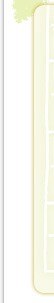
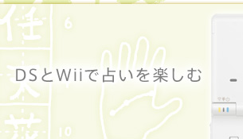
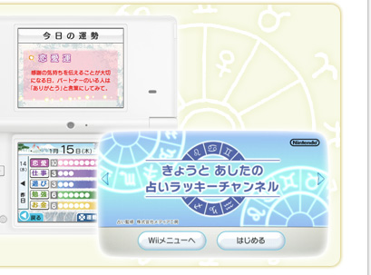
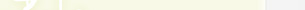
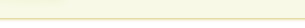
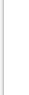
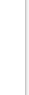

|  |  |  |
| ●『DS占い生活』プレイレポート | ||
|  | ||
| ●占いについて聞いてきました | ||
|  |
|  | ニンテンドーポイントをもっと知って、WiiとDSiを楽しむ |  |

年も明けて、2009年。みなさま、あけましておめでとうございます。新年になって、仕事や勉強、恋愛など、さまざまな願いをこめて、初詣に出かける方もたくさんいらっしゃると思います。甘酒や屋台の食べ物も楽しみですが、参拝帰りに引くおみくじの結果は毎年ワクワクしますよね。
今回のN.O.Mで取り上げるのは、現在Ｗｉｉチャンネルで配信されている『きょうとあしたの占いラッキーチャンネル』と、1月15日に発売される『DS占い生活』の２つのソフト。名前からもわかるように、私たちの身近にある「占い」をテーマにしたソフトです。家族と出かけたり、新年会で友人や同僚と会う機会の多いこの時期、「占いコミュニケーション」で、新年のスタートを踏みだしてみませんか？
そして、もう１つご紹介するのが、ニンテンドーポイントやＷｉｉポイント、DSiポイントの仕組みについて。ＷｉｉやニンテンドーDSiをインターネットにつないでもっと楽しむためのヒントが見つかるかもしれません。


きょうとあしたの占いラッキーチャンネル：© 2008 Nintendo 占い監修・株式会社メディア工房
DS占い生活：© 2009 Nintendo © 2009 株式会社メディア工房